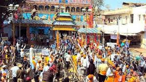

Phalguna Mela:
Phalguna Mela is the most important festival associated with the temple of Khatushyam and Shyam Temple Bhatli. The festival occurs 8–9 days before the festival of Holi.
Barbarika's head appeared on Phalguna Shuddha Ekadashi, the 11th day of the bright half of the Hindu month of Phalguna. The fair was initially held from the 9th to the 12th
of that month,
later extended to nearly 12–15 days of the bright half of the Phalguna
Month.